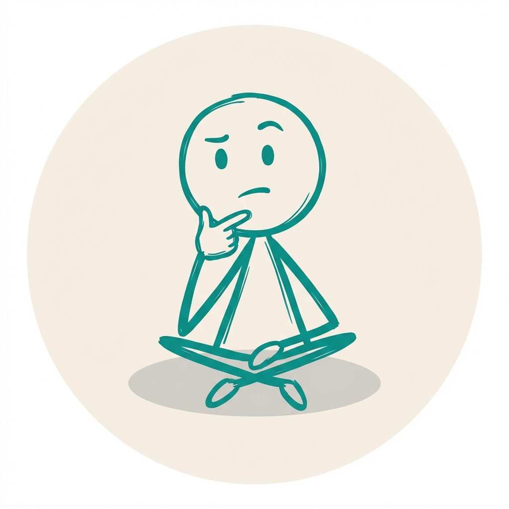

Maaker.AI
一个人类老板 + 全AI员工的一人公司
独立开发者
·
全职 Vibe Coder
关于我
我叫小马哥，去年辞掉工作，开始全职做独立开发。
没有融资，没有团队，就我一个人。但我有 5 个 AI 员工——写代码、做设计、搞运营、测试、code review，全是 AI 在干。
我专注做"小而美"的工具类 App。不追求做大，就想把每个小工具做到让人用着舒服。
如果你对 AI 编程、独立开发、一人公司这些话题感兴趣，欢迎关注我，我会持续分享真实的开发日常和踩坑经验。
找到我
AI 日报
我每天追踪 AI 领域最新动态，用 AI 自动整理成中文摘要。涵盖 AI 工具、开源项目、大模型进展、开发者生态等，每天一封邮件，不错过重要资讯。
加我微信
和一群用 AI 做独立开发的人一起交流、互相学习